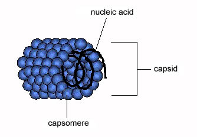
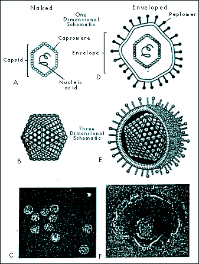
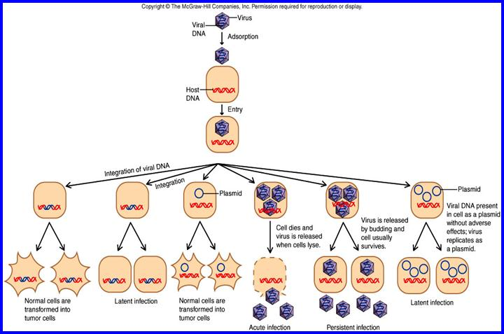
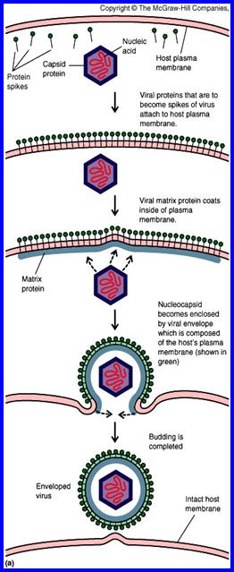

AMBE 101 :: Lecture 09 :: VIROIDS, PRIONS

A virus is a small infectious agent that can replicate only inside the living cells of organisms. Most viruses are too small to be seen directly with a light microscope. Viruses infect all types of organisms, from animals and plants to bacteria and archaea. Since the initial discovery of tobacco mosaic virus by Martinus Beijerinck in 1898, about 5,000 viruses have been described in detail though there are millions of different types. Viruses are found in almost every ecosystem on Earth and are the most abundant type of biological entity. The study of viruses is known as virology, a sub-speciality of microbiology.
Virus particles (known as virions) consist of two or three parts: the genetic material made from either DNA or RNA, long molecules that carry genetic information; a protein coat that protects these genes; and in some cases an envelope of lipids that surrounds the protein coat when they are outside a cell. The shapes of viruses range from simple helical and icosahedral forms to more complex structures. The average virus is about one one-hundredth the size of the average bacterium.
- Every virus has 2 stages
- dormant, particulate, transmissible stage called the virion stage
- an active, intracellular stage called the infectious stage
Virion Stage
- Virions are the transmissible state of a virus. Metabolically inert.
- Virion = "a piece of nucleic acid wrapped up in a protein coat" (and/or a membrane)
- The nucleic acid can be either DNA (double-stranded (ds) or single-stranded (ss)) or RNA (ds or ss); never both.
- The coat (also called viral shell or capsid) can be icosahedron (20-sided regular geometric shape common in many bacterial, animal, and plant viruses), sphere, cylinder, bullet-shaped, or amorphous shaped particle.
- Virions must be able to adhere and allow entry into some host cell(s). Also to survive outside of host cell environment.
- Some virions more hardy than others (e.g., hepatitis virus can withstand short periods of boiling; most virions are destroyed by this).
Infectious Stage
- When virus infects a cell, nucleic acid must be uncoated and gain access to metabolic machinery of cell.
- Virus life cycle is characterized by:
- attachment
- penetration, with entry of nucleic acid into cell
- early expression of virus genes (either directly by translation, if virus contains "+" RNA, or indirectly after transription and then translation)
- replication of virus nucleic acid
- synthesis of new virion components
- packaging and assembly of new virions
- exit from cell
Measurement of viral growth
- Must grow virus on host cells to see anything. Can't grow virus without cells.
- To quantify viruses, need some way to get flat surface of growing cells, allow virus-infected cells to spread radially where present = plaque.
- In bacterial cells this is easy. Spread "lawn" of bacteria on plate, add diluted phage suspension or culture infected with phages. After 6-8 hours can see plaques in E. coli.
- In plant cells, can be easy. Example: Tobacco Mosaic Virus (TMV), make virus dilution, rub over surface of tobacco leaf. After leaf growth, can observe plaque areas.
- In animal cells, not so easy. In 1960's, standard assay was to inoculate chicken egg membranes of developing chick embryos, incubate for a week, cut open shell and count plaques on membrane in the air sac. Lots of work to get statistically reliable data!
- In 1970's tissue culture became a viable alternative. Animal cells are cultured as microbes in glass or plastic, use special medium that contains most of nutrients present in blood. Cells will spread as monolayer on surface, can count plaques after staining.
Taxonomy of viruses
- Based mainly on Virion and Kingdom of host
- Use Host cell type (Animal viruses, plant viruses, etc.)
- Use Nucleic Acid type (ds DNA, ss DNA, ds RNA, ss RNA)
- Use + or - polarity of RNA. "+" is able to serve as mRNA. "-" is the complement of +, must function as template to make a complementary strand of + RNA before any translation can occur.
- Use virus coat morphology. Enveloped vs. non-enveloped viruses.
Virion Structure
"Naked" viruses
- Helical viruses
- Tobacco mosaic virus (TMV) is an example of a virus with helical symmetry.
- A helical array of identical protein subunits surrounds an RNA molecule.

- Icosahedral viruses
- built from icosahedral (20-sided) assemblies of protein subunits.
- Icosahedral shape is the minimum free energy structure for producing a shell of equivalently bonded identical structures.
- The simplest icosahedral capsids are built up by using 3 identical subunits to form each triangular face, thereby requiring 60 identical subunits to form a complete capsid. A few simple virus particles are constructed in this way, e.g. bacteriophage ØX174.
- Most icosahedral viruses have more than 60 subunits, usually some multiple N times 60. N (called the triangulation number) can have values of 1, 3, 4, 7, 9, 12, and more.
- 
"Enveloped" viruses
- "Naked" viruses require host death so viruses can be released. This may be wasteful, and may cause premature death of host cell.
- Alternative strategy: shed virus particles by budding out, continued release from cell membrane. Cell does not die (immediately), continues to serve as factory for virus assembly and release. Virus typically acquires a coating of host cell membrane, modified to include virus-specific proteins. This is the "envelope". Virus may have additional protein coats (often icosahedral) inside the envelope.
- Eventually host cell is too depleted to survive. Can see evidence of this as "cytopathic effect" (CPE). Cell then dies.
- Examples of enveloped viruses include:
- Retrovirus, including HIV
- Paramyxovirus, including influenza
- Rhabdovirus, including rabies
- Filovirus. Although very "hot" in the news, these viruses are very poorly characterized because of their extreme pathogenicity. They are class IV pathogens, meaning they can only be cultured in total containment facilities, of which there are only two in the U. S. They are thought to be enveloped viruses with - RNA genomes.
Virus Genomes
- Rule of Thumb: to estimate # of virus proteins, look at size of viral DNA or RNA. For each 1000 base pairs, can guess the existence of 1 protein
- "typical" gene has 300-400 amino acids = ~ 1000 base pairs = 1 kbp (= 1 protein)
- small virus: SV40 => 5000 base pairs = 5 kbp ~ 5 proteins
- large virus: T4 => 200 kbp ~ 100-200 proteins
- by comparison, E. coli: 4000 kbp
Bacterial Viruses = Phages
Bacterial defenses against infection
Cell surfaces: possibilities of mutation
- Virus must attach to some specific cell surface protein or polysaccharide. But these are specified by genes, and genes can mutate. In population, will always find some variant strains with slightly different cell surfaces, may not bind virus well.
- When phage first discovered, thought this could be effective weapon against bacterial disease. But frequency of resistant bacterial strains was too high, any given strain of virus quickly became useless as resistant survivors propagated.
Nucleases: endo- and exo-DNases and RNases
- All bacteria seem to have nucleases that can attack DNA (called DNases) and RNA (called RNases).
- Exoenzymes attack free 5' or 3' ends of DNA, RNA molecules. Bacteria are protected since DNA (and plasmids) are always circular. RNases are present, and in fact destroy mRNA eventually (bacteria are always making new RNAs, very responsive to enviroment changes).
- Endonucleases are potentially lethal weapons. Called restriction enzymes. Attack at specific sequence: e.g., in E. coli, enzyme called EcoRI will attack any sequence with 5' G-A-A-T-T-C 3' (cuts DNA between G and A).
- Why doesn't this kill cell? Because cell also has a second enzyme, called modification enzyme, that protects all host DNA sequences of this type. Typically adds a methyl (-CH3) group to one base at the cutting site. The methylated base is modified, and protected from the restriction enzyme. When foreign DNA comes into cell (e.g. virus DNA), if restriction site if present it will be cut and ----- requiem for the virus.
The importance of Restriction Enzymes
Restriction enzymes are responsible for the genetic revolution. They make reproducible, specific cuts with surgical precision. Major industry has emerged in biochemical supply companies to harvest bacteria, purify restriction enzymes, and sell these to research and applied industries.
Animal Viruses
- Animal viruses are different in many respects from bacterial viruses. The host cells are more complex, with multiple compartments and more complex regulation of replication, transcription, and translation. Animal cells are not bounded by cell walls.
- Not surprisingly, animal viruses have evolved to overcome these problems. They attach and enter by different mechanisms than phages, and their intracellular activities include the ability to move between different compartments as needed.
- Viral entry and exit from cells is very different from bacteriophages. Animal viruses must enter through cell membrane, either by triggering endocytosis pathway or by fusing viral envelope with the cell envelope.
- Modifications are needed in both cellular and viral mRNA to allow recognition and movement from nucleus to cytoplasm. For example:
- 3' tail of poly A
- 5' cap of methyl Guanosine triphosphate

Types of infection
Viruses in animal cells show a variety of infection patterns:
- lytic infection: destroys host cells.
- persistent infection: host cell continues to shed virus over long time. Cell gradually becomes recognizably poorer (recognized as cytopathic effect, or CPE), eventually "crumps out".
- transformation: infection by certain viruses causes cells to change, become cancerous. Responsible genes are called oncogenes (tumor-producing genes). Viral oncogenes have also been found in uninfected cells. These are genes involved in regulation of cell cycle; when defective, normal regulatory control is lost and cell can become cancerous.
- latent infection: virus genes may not be expressed for long time (ex. many Herpes infections). Not the same as lysogeny -- genes are not integrated into host chromosome.
Human Immunodefiency Virus (HIV) and AIDS
- AIDS first recognized in 1981. Over 300,000 cases reported in U.S., over 8 million in Africa, over 12 million infected world-wide.
- View AIDS in perspective: a PBS website with current data on the AIDS epidemic.
- Transmission: sexual activity, especially with multiple sex partners. Also contaminated blood, needles, hospitals. Not just a disease of homosexuals! In Africa (most # cases) about equal # of male and female victims.
- AIDS lowers immune system's ability to respond to other infections, allows opportunistic pathogens to invade body. Most common infection is pneumonia (lung infection) caused by Pneumocystis (2/3 of all AIDS patients get this at some point).
- Host cell for the virus is CD4 (T-helper) cell, needed to activate antibody production. In normal human, CD4 cells account for 70% of total T cells -- in AIDS, number decreases, may reach 0% of T cell pool.
- Progress of HIV infection only recently understood. Formerly thought that virus became latent. Now discover that virus is anythig but latent: during infected period (which can last 10 years), body is destroying ~ billion virions/day, and virus is killing about 100 million CD4 T cells a day. HIV virus continues replicating, and body rapidly replenishes lost T cells. Only when lymph nodes wear out does virus gain the upper hand. See handout in class titled "Huge HIV turnover helps explain drug resistance, pathogenicity".
- Prognosis: with carefully selected treatments, better than before. Virtually every infected person dies sooner of later, usually within 10 years of infection. No cure known, no vaccine yet available. Virus mutates rapidly, many strain variations. Vaccines being tried, results mixed but preliminary.
- Drugs: some types of drugs offer limited success.
- AZT (azidothymidine) is analog of thymidine, but is blocked at 3'-position, so no further chain growth possible. These target viral reverse transcriptase enzyme. Should reduce DNA synthesis in treated cells. But eventually, viral mutants resistant to drug arise. Also, long term use of drug can cause toxic side effects.
- protease inhibitors. Like many viruses, HIV needs to cleave large protein product into smaller products, using viral protease protein. By inhibiting this enzyme, should block necessary stage in viral replication cycle. Still under development, but resistant viral mutants to these type of drugs have already been found. Still, drug offers promise. See handout article for more details. Safe sex! Caution with sharps. Extra caution in clinical settings.
HIV Life Cycle
(budding through plasma membrane)

Viroids and Prions
- Viroids very small ss RNA genomes (~300 nucleotides). No coat, and RNA does not encode protein. Known viroids cause diseases in plants because host cells replicate the RNA.
- Prions (protein infectious agent) do not have a nucleic acid genome. Prion diseases are often called spongiform encephalopathies because of the post mortem appearance of the brain with large vacuoles in the cortex and cerebellum.
- Pathology of brains infected with prion diseases:
- Scrapie (sheep)
- bovine spongiform encephalopathy (cows) = "mad cow disease"
- Creutzfeldt-Jakob Disease (humans)
- Prion diseases in humans are probably primarily a genetic neurotoxic disorder. Transmission of the disease to humans via infectious prions is likely to be rare.
- The prion is a modified form of a normal cellular protein known as PrPc (for cellular), found predominantly on the surface of neurons and thought to be involved in synaptic function.
The modified form of PrPc (= prion) is known as PrPsc (for scrapie) which is relatively resistant to proteases and accumulates in cytoplasmic vesicles of diseased individuals. Prion protein may cause normal protein to fold abnormally.
| Download this lecture as PDF here |